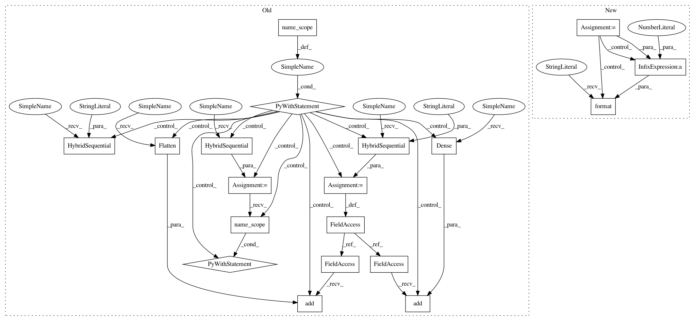

b89b592181e06850fa6eae6be04c2f8ec3b7fdaf,gluon/models/preresnet.py,PreResNet,__init__,#PreResNet#Any#Any#Any#Any#Any#Any#Any#,386
Before Change
**kwargs):
super(PreResNet, self).__init__(**kwargs)
with self.name_scope():
self.features = nn.HybridSequential(prefix="")
self.features.add(PreResInitBlock(
in_channels=in_channels,
out_channels=init_block_channels,
bn_use_global_stats=bn_use_global_stats))
in_channels = init_block_channels
for i, channels_per_stage in enumerate(channels):
stage = nn.HybridSequential(prefix="stage{}_".format(i + 1))
with stage.name_scope():
for j, out_channels in enumerate(channels_per_stage):
strides = 2 if (j == 0) and (i != 0) else 1
stage.add(PreResUnit(
in_channels=in_channels,
out_channels=out_channels,
strides=strides,
bn_use_global_stats=bn_use_global_stats,
bottleneck=bottleneck,
conv1_stride=conv1_stride))
in_channels = out_channels
self.features.add(stage)
self.features.add(PreResActivation(
in_channels=in_channels,
bn_use_global_stats=bn_use_global_stats))
self.features.add(nn.AvgPool2D(
pool_size=7,
strides=1))
self.output = nn.HybridSequential(prefix="")
self.output.add(nn.Flatten())
self.output.add(nn.Dense(
units=classes,
in_units=in_channels))
def hybrid_forward(self, F, x):
x = self.features(x)
x = self.output(x)
return x
After Change
in_channels=in_channels)
self.bn = nn.BatchNorm(
in_channels=out_channels,
use_global_stats=bn_use_global_stats)
self.activ = nn.Activation("relu")
self.pool = nn.MaxPool2D(
pool_size=3,
strides=2,
padding=1)
def hybrid_forward(self, F, x):
x = self.conv(x)
x = self.bn(x)
x = self.activ(x)
x = self.pool(x)
return x
class PreResActivation(HybridBlock):
PreResNet pure pre-activation block without convolution layer. It"s used by itself as the final block.
Parameters:
----------
In pattern: SUPERPATTERN
Frequency: 3
Non-data size: 19
Instances
Project Name: osmr/imgclsmob
Commit Name: b89b592181e06850fa6eae6be04c2f8ec3b7fdaf
Time: 2018-08-18
Author: osemery@gmail.com
File Name: gluon/models/preresnet.py
Class Name: PreResNet
Method Name: __init__
Project Name: osmr/imgclsmob
Commit Name: 340094b32576bf6dce50dbfdf82df14a5f6c043e
Time: 2019-06-10
Author: osemery@gmail.com
File Name: gluon/gluoncv2/models/efficientnet.py
Class Name: EfficientNet
Method Name: __init__
Project Name: osmr/imgclsmob
Commit Name: e8b43356aa8cb8c659cae25aea32a49fd0881cd9
Time: 2019-01-27
Author: osemery@gmail.com
File Name: gluon/gluoncv2/models/densenet_cifar.py
Class Name: CIFARDenseNet
Method Name: __init__
Project Name: osmr/imgclsmob
Commit Name: b89b592181e06850fa6eae6be04c2f8ec3b7fdaf
Time: 2018-08-18
Author: osemery@gmail.com
File Name: gluon/models/preresnet.py
Class Name: PreResNet
Method Name: __init__